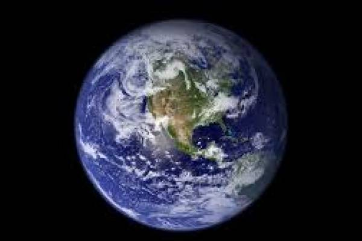

|  |
|---|
El planeta tierra es el tercer planeta desde el Sol y es el mas grande de los planetas terrestres. A diferencia de los otros planetas en el sistema solar que llevan el nombre de las formo hace aproximadamente 4.54 billon años y es el unico planeta conocido para sustentar vida
| Marte | 6.792 Km | -87 to -5 °C |
|---|---|---|
| Venus | 12.104 Km | 462 °C |